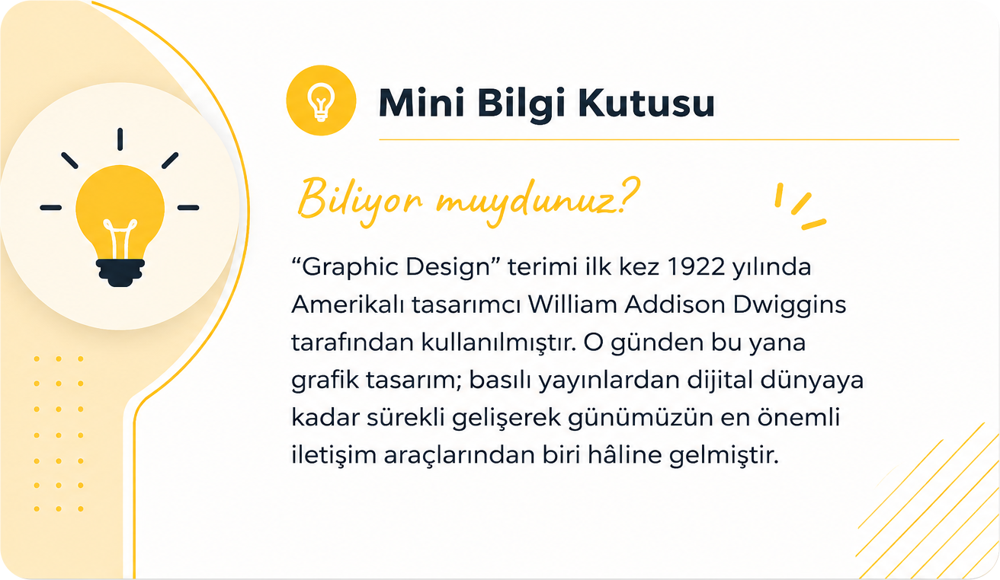

Grafik Tasarım Nedir?
Her gün yüzlerce tasarımla karşılaşıyoruz. Telefonumuzdaki uygulamalar, marketten aldığımız ürünlerin ambalajları, izlediğimiz reklamlar, sosyal medya paylaşımları ve hatta yol tabelaları… Bunların büyük bir kısmı grafik tasarımın ürünüdür.
Peki, grafik tasarım tam olarak nedir? Sadece güzel görünen görseller hazırlamak mı, yoksa bundan çok daha fazlası mı?
Bu yazıda grafik tasarımın ne olduğunu, neden önemli olduğunu ve hayatımızın neredeyse her alanında nasıl yer aldığını birlikte inceleyeceğiz.
Grafik Tasarım Nedir?
Grafik tasarım; bir mesajı, bilgiyi veya fikri görsel ögeler kullanarak en anlaşılır ve en etkili şekilde aktarma sanatıdır.
Bu süreçte yazılar, renkler, şekiller, fotoğraflar, çizimler ve boşluklar bilinçli bir şekilde bir araya getirilir. Amaç yalnızca estetik bir görüntü oluşturmak değil, aynı zamanda izleyicinin dikkatini çekmek, mesajı doğru şekilde iletmek ve istenilen etkiyi oluşturmaktır.
Kısacası grafik tasarım, görsel iletişimdir.
Grafik Tasarım Neden Önemlidir?
- Dikkat çeker.
- Mesajın daha kolay anlaşılmasını sağlar.
- Marka güvenilirliğini artırır.
- Bilgiyi daha düzenli sunar.
- İnsanların aklında kalmayı kolaylaştırır.
Bu yüzden başarılı bir tasarım yalnızca güzel görünmek için değil, aynı zamanda etkili iletişim kurmak için hazırlanır.
Grafik Tasarım Günlük Hayatta Nerelerde Karşımıza Çıkar?
- Logo ve kurumsal kimlikler
- Telefon uygulamaları
- Sosyal medya gönderileri
- Kitap ve dergi kapakları
- Ürün ambalajları
- Web siteleri
- Reklam panoları
- Kartvizitler
Grafik Tasarımcı Ne İş Yapar?
Grafik tasarımcı; hedef kitleyi analiz eder ve verilmek istenen mesajı en doğru şekilde aktaracak görsel dili oluşturur.
- Logo tasarlar.
- Kurumsal kimlik oluşturur.
- Sosyal medya görselleri hazırlar.
- Afiş, broşür ve katalog tasarlar.
- Ambalaj tasarımı yapar.
- Dergi ve kitap sayfalarını düzenler.
- Web sitesi ve mobil uygulama arayüzleri tasarlar.
- Dijital reklam görselleri üretir.
Grafik Tasarım Sanat mıdır?
Grafik tasarım, sanattan ilham alsa da temel amacı bir problemi çözmek ve iletişim kurmaktır. Bir ressam duygularını ifade etmek için eser üretirken, grafik tasarımcı belirli bir hedef doğrultusunda çözüm üretir. Bu nedenle grafik tasarım; yaratıcılığı, estetik anlayışı ve iletişim becerisini bir araya getiren uygulamalı bir tasarım disiplinidir.

Sonuç
Grafik tasarım, yalnızca güzel görünen görseller hazırlamak değildir. Asıl amacı, bir mesajı doğru kişiye, doğru zamanda ve en etkili şekilde ulaştırmaktır. Bugün kullandığımız uygulamalardan satın aldığımız ürünlere kadar neredeyse her alanda grafik tasarımın izlerini görmek mümkündür.
Sık Sorulan Sorular
Hayır. Doğru kaynaklarla ve düzenli pratik yaparak herkes grafik tasarımın temel prensiplerini öğrenebilir.
Hayır. Çizim bilmek avantaj sağlayabilir ancak zorunlu değildir.
Marka kimliği, reklam, sosyal medya, web tasarımı, mobil uygulamalar, ambalaj, yayıncılık ve daha birçok alanda kullanılır.